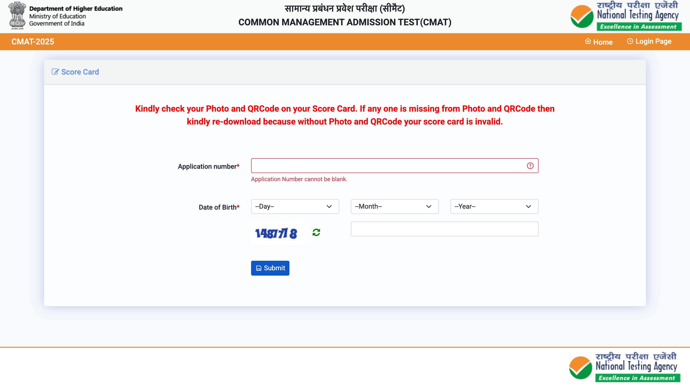
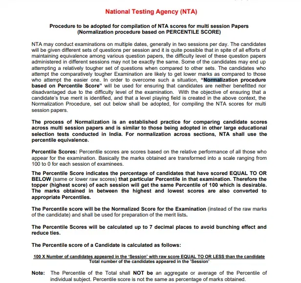

- We’re on your favourite socials!

The CMAT result 2026 has been released online on the official website @exams.nta.ac.in/CMAT. The CMAT result is released in the form of a scorecard containing your personal information, sectional/ overall scores and percentiles, and All India Rank (AIR).
Predict your Percentile based on your CMAT performance
Predict RankThe CMAT result 2026 has been issued on February 17, 2026 by the National Testing Agency (NTA) in the form of a scorecard on the official website. Exam takers need to log in to the CMAT account with their application number and date of birth to access their CMAT scorecard 2026, which comprises their sectional percentile, total percentile, sectional score, and total score.
The CMAT 2026 scorecard will only be available on the official site for a limited time and will be valid for one year. You must save a copy of your result cum scorecard on your computer and take a printout, as it will be required during the admission process. The CMAT result download link 2026 has been updated below.
The CMAT 2026 exam was conducted on January 25, 2026. All the details about the CMAT 2026 result, including the direct link, dates, steps to download, details mentioned, and other information, can be checked on this page.
The major highlights of the CMAT 2026 result have been provided below:
Particulars | Details |
|---|---|
Conducting Body | National Testing Agency (NTA) |
Mode of Release | Online |
Details Required to Access the Result | Email ID and Password |
Determining Factors for Result | CMAT score + Personal Interview, Group Discussion, and Written Ability Test |
Details in CMAT Exam Result |
|
CMAT Scorecard Validity | 1 Year |
Mentioned below are the CMAT result date 2026 and time:
| Event | Date |
|---|---|
CMAT Exam Date | January 25, 2026 |
CMAT Result 2026 Release Date | February 17, 2026 (Out) |
| CMAT Result 2026 Release Time | Around 9 PM |
Mentioned below are the steps that the candidates need to follow to view the CMAT results 2026 or CMAT scorecard 2026:
Visit the CMAT official website i.e. exams.nta.ac.in/CMAT.
Click on 'View CMAT 2026 scorecard' link available on the home page.
Log in by entering the required details such as Application Number and Password or Date of Birth.

After that, click on the 'Submit' Tab.
The CMAT scorecard will be displayed on the screen.
Download and save the CMAT scorecard 2026.
Take a printout for further reference.
The CMAT scorecard is a crucial document that candidates must carry during the selection process. The following details will be mentioned on the CMAT result 2026:
The CMAT 2026 result page will contain all the necessary information about the candidates and their scaled scores, total scores, and percentage ranking. Check the CMAT scorecard sample image provided below.

The result declaration patterns from previous years show that the CMAT 2026 result will be released on time, much like the previous years. Two years ago, students witnessed the longest delay in the release of the results, although it later got back on track. The following table shows the previous year trends in result of CMAT:
Exam Year | Exam Date | Result Date |
|---|---|---|
CMAT 2025 | January 25, 2025 | February 13, 2025 |
| CMAT 2024 | May 15, 2024 | June 6, 2024 |
| CMAT 2023 | May 4, 2023 | May 31, 2023 |
CMAT 2022 | April 9, 2022 | April 29, 2022 |
CMAT 2021 | March 31, 2021 | April 9, 2021 |
CMAT 2020 | January 28, 2020 | February 4, 2020 |
CMAT 2019 | January 28, 2019 | February 5, 2019 |
CMAT 2018 | January 20, 2018 | February 15, 2018 |
CMAT 2017 | January 28, 2017 | February 8, 2017 |
CMAT 2016 | January 17, 2016 | January 21, 2016 |
To calculate the CMAT score, candidates first need to match their answers given in the CMAT response sheet with the correct answers provided in the official answer key. The raw score can be calculated by obtaining the sum of the correct answers and then subtracting the sum of incorrect answers from it. Here's the formula:
CMAT Score = (Sum of Correct Answers x 4) - Sum of Incorrect Answers |
|---|
CMAT 2026 exam score can be calculated based on the marks assigned to each question. Below is the CMAT marking scheme.
Also Read:
CMAT is calculated on the basis of rank vs the total number of candidates. Given below is the formula for calculating the CMAT percentile -
CMAT Percentile = 100 x (No. of candidates with raw marks equal to or less than the candidate/ Total no. of test-takers) |
|---|
For example, let's say 10,000 candidates appeared for CMAT 2026 and a candidate scores the highest marks. The candidate's rank will be 1 and the CMAT percentile score will be (100 x 9999)/10,000= 99.99. The calculation will be as follows-
(10,000 - 1) / 10,000 x 100 = 99.99 |
|---|
Also, if more than one candidate secures the same rank, the same rank will be assigned to all of them but will follow an alphabetic order. The CMAT rank of the next candidate will then be extended by the number of additional students with the same rank. For instance, if 3 students have the 25th rank, the subsequent student's rank will be 28th.
Wondering what after CMAT result? Well, after the result announcement, candidates should first download their scorecards from the official website. This scorecard is crucial for the admission process as it reflects the candidate's overall and sectional scores. Following the result declaration, various participating institutes will announce their cut-off scores. Candidates meeting these cut-offs are eligible to apply for admission to these institutions.
The next step involves applying to the CMAT participating colleges of choice that accept CMAT scores for their MBA or PGDM programs. It's important to check the eligibility criteria, application deadlines, and selection process of each institution as they may vary. The selection process typically includes Group Discussion (GD), Personal Interview (PI), and sometimes a Written Ability Test (WAT). Each institute has its own weightage criteria for these stages combined with the CMAT score to shortlist candidates for admission.
Moreover, some states also use the CMAT score for admissions to their state universities. In such cases, candidates should keep an eye on the respective state notification for the counseling process. Ultimately, securing a good rank in CMAT opens a gateway to numerous AICTE-approved institutes across India, offering a platform for candidates to kickstart their management careers. Hence, post-result, focusing on preparation for GD, PI, and WAT becomes crucial for successful admissions.
Given below are the expected CMAT cutoff 2026 for various participating institutes given in the form of percentile scores.
Name of the College | CMAT Percentile | CMAT Score |
|---|---|---|
99.9+ | 320 | |
99+ | 310 | |
95-99 | 232 | |
95-99 | 232 | |
95-99 | 232 | |
Pune University Department of Management Sciences (PUMBA DMS) | 95-99 | 232 |
90-95 | 232 | |
90+ | 232 | |
85+ | 204 | |
85+ | 204 | |
85+ | 204 | |
85+ | 204 | |
85+ | 204 | |
85+ | 204 | |
80+ | 204 | |
80+ | 204 | |
80+ | 204 | |
80+ | 204 | |
80+ | 204 |
Also Read:
It is important to understand the CMAT score vs percentile in order to estimate the CMAT 2026 percentile and apply to colleges accordingly. Check out the CMAT score vs percentile analysis in the table below.
CMAT 2026 Expected Score (Out of 400) | CMAT 2026 Expected Percentile Range |
|---|---|
315-350 | 100 |
286-310 | 99.1 – 99.99 |
261-285 | 90-99 |
201-260 | 81-89 |
171-200 | 71-80 |
141-170 | 61-70 |
116-140 | 51-60 |
Below 116 | Below 51 |
Check the table below for the past percentile of three years to get an idea of what the expected percentile of CMAT 2026 result is going to be.
Percentile | 2025 Score | 2024 Score | 2023 Score |
|---|---|---|---|
99.99 | 340+ | 380 | 360 |
99.50 | 300 | 303 | 299-306 |
99.25 | 285 | ~298 | ~295 |
99.00 | 270 | 293 | 292 |
98.00 | 260 | 280 | 283 |
95.00 | 245 | 270 | 265-271 |
90.00 | 205 | 260 | 250-258 |
85.00 | 190 | 240 | 238 |
80.00 | 180 | 205 | 206 |
75.00 | 178 | 190-200 | 193 |
70.00 | 175 | 180-188 | 179 |
Find the CMAT score vs percentile for the years 2022, 2021, 2020, and 2019.
Percentile | CMAT 2022 Score | CMAT 2021 Score | CMAT 2020 Score | CMAT 2019 Score |
|---|---|---|---|---|
99.5 | 303 | 325 | 320 | 315 |
99 | 293 | 318 | 313 | 310 |
95 | 260 | 300 | 250 | 282 |
90 | 240 | 282 | 232 | 264 |
80 | 211 | 200 | 203 | 234 |
70 | 180 | 170 | 180 | 210 |
If two or more candidates taking the CMAT 2026 test achieve the same score, the ranking will be determined based on the CMAT sectional score in the following order:
1. Quantitative Techniques & Data Interpretation
2. Logical Reasoning
3. Language Comprehension
4. General Awareness
If, after following the above process, the ranking of multiple candidates remains the same, they will be assigned the same rank but will be displayed in alphabetical order by their names. Subsequently, the CMAT rank of the next candidate will be extended by the number of additional candidates with the same rank.
CMAT normalization process is used to adjust the scores of candidates who took the exam in different shifts to account for differences in question paper difficulty levels. This process is commonly used for many other MBA entrance exams in India. Through normalization, the scores of candidates who faced a difficult question paper will increase, while those who faced an easier question paper will decrease.
NTA has stated that it will use the "Normalization procedure based on Percentile Score" to address any differences in question paper difficulty across shifts. After ensuring a fair division of candidates into different shifts, percentile scores are calculated for each shift separately. This means the percentile scores for candidates in Shift 1 will be calculated separately from those in Shift 2. As a result, the percentile score will be the normalized score of the candidate, which will be mentioned as the NTA Score in the merit list.

The National Testing Agency (NTA) will release the CMAT merit list 2026 soon after announcing the results. This list includes the names and roll numbers of all applicants who took the CMAT exam, regardless of their test performance. The merit list will be available in PDF format on the official website, and it will display the All India Rank (AIR) of each candidate based on their marks and NTA scores. It's important to note that the CMAT score obtained will only be valid for the academic year 2026-2027. The following information will be mentioned on the CMAT 2026 merit list:
The CMAT selection process involves multiple stages designed to assess the aptitude and suitability of candidates for management education. After the CMAT exam is conducted, institutions that accept its scores invite candidates for further rounds of selection. These may include Group Discussion (GD), Personal Interview (PI), and Written Ability Test (WAT), depending on the specific requirements of each institution.
The participating institutes compile scores from the CMAT and subsequent selection rounds to create a merit list. Candidates are then offered admission based on their rank in the merit list, subject to meeting the eligibility criteria and other admission norms of the respective institutions. The selection process ensures that candidates are not only academically proficient but also possess the soft skills required for a successful career in management.
Want to know more about CMAT
The main difference between CMAT score and CMAT percentile is that the CMAT score is the total marks one has scored in the exam, whereas the CMAT percentile is the rank of an applicant compared to all other test takers. The CMAT score determines the candidate’s performance in relation to the test only, whereas the CMAT percentile determines the candidate’s performance as compared to all other candidates.
After CMAT results, the CMAT selection process will begin for CMAT accepting colleges. On the basis of the CMAT score and the institute's CMAT cutoffs admissions will be awarded to eligible students. Only those candidates who meet the CMAT cutoff scores and also successfully clear the CMAT selection process will be able to secure MBA admission.
A good CMAT result is one that enables you to secure admission to some of the top colleges in India accepting CMAT for MBA admission. A good CMAT score will also be determined by a candidate’s preferences for MBA education. If candidates wish to secure admission at Tier 1 MBA colleges their CMAT score must be 85 or above at least. Similarly a score of 70-80 percentile in CMAT is good enough for MBA admission to Tier 2 MBA colleges.
The CMAT 2026 result will be released in the second week of February 2026. The CMAT admission process will soon be initiated and completed by the respective b-schools depending on their individual cutoffs.
The validity of CMAT results is one year only. The scores will only be valid from the date of the exam attempted to the exam date until next year. Let us say, if you have attempted CMAT 2025 exam, your score will be valid until CMAT 2026 exam day. After this, if a candidate wants to enrol in any business school, they will again have to register for the exam, pay the required application fee and take the exam to participate in the further selection process.
Yes, the CMAT result cum scorecard 2026 will contain separate scores for all the sections. It will also include the following things:
Applicant’s full name and roll number
Applicant’s details as well as their guardian’s name
Applicant’s gender, category, and exam qualifying states
Applicant’s registration number
CMAT score (sectional and overall)
CMAT percentile (sectional and overall)
Candidates can download their CMAT result 2026 by visiting the official website of NTA-CMAT. For this, they will need to enter their CMAT exam 2026 application number, date of birth, and security pin. After logging in successfully, candidates will be redirected to a new window where they can download their CMAT result 2026 pdf for further use.
You must first understand the marking scheme in order to fully understand how the CMAT score is determined. Four marks will be awarded for each right response. One mark will be subtracted for each wrong response. There will be no points awarded for each question that remains unanswered. The five sections of the CMAT each contain twenty questions. A candidate's overall score will be (70x4-10+5x0) 270/400 if they answered 70 out of 100 questions correctly, 10 wrong, and 5 skipped. Each test taker's CMAT raw score is calculated and then converted to a percentile for the purpose of preparing an all India merit list.
The following details are mentioned on the CMAT result 2026:
Name, CMAT roll number, and exam slot of the candidate
Candidate's category and gender
Candidate's contact details
Candidate's date of birth
Candidate's qualifying status
CMAT 2026 rank
CMAT 2026 registration number
CMAT sectional and overall percentile
CMAT sectional and overall score
Applicant’s guardian's name
A candidate's CMAT result 2026 is used to determine their rank depending upon the total marks scored by a candidate. The test taker who earns the maximum marks out of a possible 400 receives the All India Rank 1 designation. If multiple candidates earn the same score, the same rank is given to each of them, but only one is shown in the CMAT rank list since the names are sorted alphabetically.
Typical response between 24-48 hours
Get personalized response
Free of Cost
Access to community